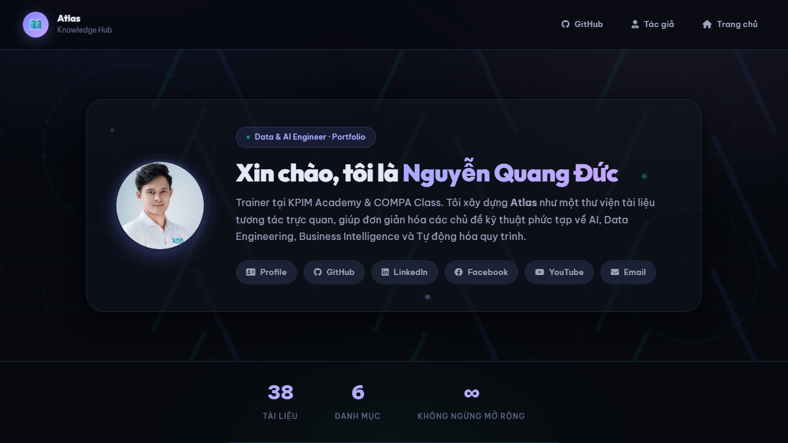
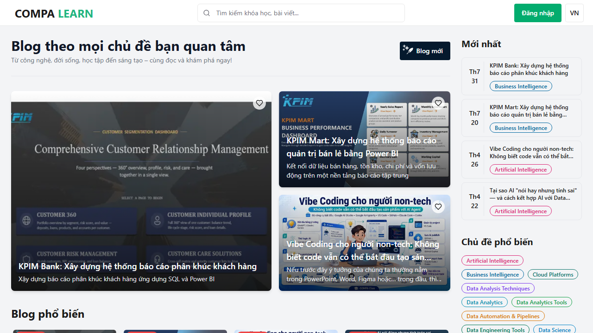

map Bài viết trên Website Atlas 36 bài
Chuỗi bài viết chuyên sâu về Prompt & Context Engineering, AI Agent Workspaces và Data Automation trên ducnguyen.vn/atlas. Click thẻ để đọc trực tiếp trên Atlas.
school Bài viết trên COMPA Class 18 bài
Bài viết thực chiến về Vibe Coding cho người non-tech, ứng dụng AI trong Data Analytics, RAG và hành trình Founder EdTech trên compaclass.com. Click thẻ để mở trên COMPA.
smart_display Video trên YouTube 15 video
Video tóm tắt tin tức công nghệ, Data News, AI News và các bài giảng thực chiến phát hành trên kênh YouTube @ducnguyen-ai. Click thẻ để xem trực tiếp trên YouTube.
public Bài viết trên Facebook 8 bài
Bài viết chọn lọc, video reel và cập nhật cộng đồng từ Fanpage Tobi Nguyen Data & AI. Click thẻ để xem chi tiết bài đăng.
article Danh mục toàn bộ bài viết & video 77 mục
Bảng tra cứu toàn bộ 77 bài viết và video đã xuất bản trên Website Atlas, COMPA Class, Kênh YouTube và Trang Facebook.
hub Hệ Thống Nền Tảng & Kênh Trực Tuyến
Cửa sổ kết nối và tương tác trực tiếp tới Website Atlas, Blog COMPA Class, Kênh YouTube @ducnguyen-ai và Trang Facebook Tobi Nguyen.
map Website Atlas
Thư viện tri thức tương tác về Prompt, Context & AI Engineering tại ducnguyen.vn/atlas.

school Blog COMPA Class
Bài viết thực chiến về Vibe Coding, Data Analytics & AI tại compaclass.com/blog.

smart_display Kênh YouTube @ducnguyen-ai
Kênh video công nghệ, Data News & thực hành AI Agent, Vibe Coding.
public Trang Facebook Tobi Nguyen
Cửa sổ trực tiếp vào Fanpage Tobi Nguyen Data & AI cập nhật cộng đồng.